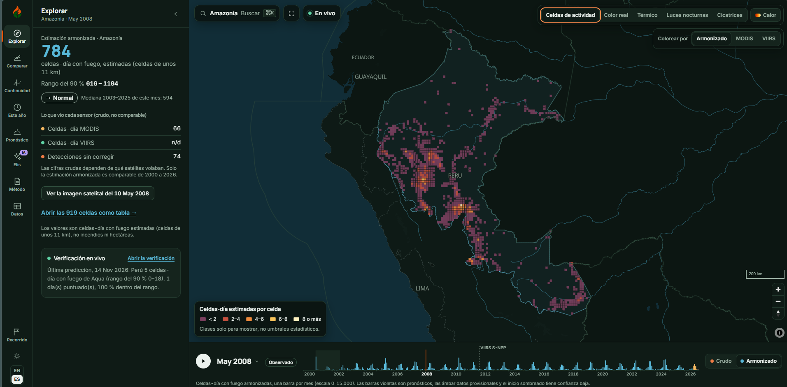

MODIS
Terra from November 2000; Aqua from July 2002. The initial Terra-only bridge is marked low confidence.
NASA Space Apps Challenge 2026 · Harmonization of MODIS and VIIRS Hot Spots
FireChronos turns changing satellite observations into a comparable, uncertainty-bounded monthly record of fire activity from 2000 to 2026.
Challenge alignment: this repository documents MODIS–VIIRS fire-detection harmonization in Peru. It contains no microgravity combustion dataset or spacecraft fire-safety model, so this page does not claim to solve “Flame in Freefall.”

MODIS has observed active fires since 2000. VIIRS joined in 2012 with a finer detection footprint. Simply adding detections makes the time series jump, even when the underlying fire activity has not changed by the same amount.
That breaks year-to-year comparisons used by researchers, journalists and regional monitoring teams. FireChronos asks a narrower question: how can observations from different sensors support one cautious historical record?
Scope check. FireChronos studies satellite observations of fires on Earth. It does not study flame behavior in microgravity or certify spacecraft and habitat safety.
Standard and near-real-time files cover several MODIS and VIIRS platforms. The analysis groups detections into 0.1° cell-days and monthly regional summaries.
Terra from November 2000; Aqua from July 2002. The initial Terra-only bridge is marked low confidence.
Suomi-NPP anchors the main calibration; NOAA-20 and NOAA-21 are retained separately for later coverage.
A fire cell-day is a 0.1° grid cell with at least one vegetation-fire detection on a date. It is not an individual fire or burned area.
Source: NASA Fire Information for Resource Management System (FIRMS), MODIS active-fire and VIIRS 375 m active-fire detections. Analysis uses vegetation detections and sensor-specific confidence filters described in the data contract. Local raw inventory: 56 CSV files and two boundary GeoJSON files; the monthly record runs November 2000 through November 13, 2026. The latest 2026 near-real-time rows are provisional.
A regional and monthly pipeline keeps the observation, estimate and forecast distinct.
Read NASA FIRMS MODIS and VIIRS records with sensor availability and outages.
Filter vegetation detections, assign 0.1° cells and collapse each cell-date to one cell-day.
Use Chapman capture–recapture during sensor overlap, with Aqua and S-NPP calibration by region and month.
Compare against held-out overlap years, a MODIS-equivalent emulator and external context.
Calibration: 2013–2020. Held-out comparison: 2021–2024. The 90% interval and period-confidence flags travel with the monthly estimates.
The headline estimate uses Chapman capture–recapture: it compares cell-days seen by both sensors with cell-days seen by only one to estimate missed activity. It is a statistical estimator, not an AI model.
A separate MODIS-equivalent emulator uses a calibrated histogram gradient-boosting classifier to estimate which VIIRS cell-days Aqua would detect. On the 2021–2024 test period, its national AUC was 0.756 and Brier score 0.104. Its monthly total error was 16.8%, versus 17.5% for a fixed-ratio baseline. These are emulator metrics, not proof that the main fire estimate is accurate.
The seasonal forecast is a Ridge regression on fire-history anomalies, evaluated by leave-one-year-out backtesting. It is experimental and remains separate from observed values.
Every figure below is generated from the repository’s processed data or its accompanying method report. The comparison reference is not ground truth.
During the 2013–2020 calibration, the share of Aqua cell-days also detected by S-NPP is higher when overpasses are close together.
80.0% at a gap under 20 minAt 20–40 minutes, the share is 57.6%. This is an observed overlap pattern, not a direct measurement of flame lifetime.
Source: data/processed/methodology.json · findings.calibration_overpass_gaps.
In the 2021–2024 held-out comparison, this is the mean annual relative difference between the Aqua-only estimate and the two-sensor estimate on identical available days.
Peru 3.5% · Amazon 11.3% · Andes 7.0% · Coast 32.0%. Coast has the largest deviation. Source: methodology.json and scripts/validate.py.
This tests agreement with another estimate, not accuracy against a complete fire census.
In Peru, the raw sum goes from 10,375 detections in 2011 to 92,807 in 2012, when VIIRS joins MODIS.
These are raw detections, not cell-days. Source: series.json, summed by year for Peru.
Do not read the increase as a ninefold increase in fire activity.
Charts use the real repository aggregates. Charts are static summaries, not live data queries. Reported uncertainty and the limitations below remain part of the interpretation.
A sensor-aware record can help researchers and regional monitoring teams compare seasonal patterns without mistaking a new satellite for a sudden change in fire activity. The project describes activity in cell-days, not fire perimeters, burned hectares or live incident alerts.
It does not provide spacecraft fire-safety insights. That would require microgravity combustion data and safety evidence that are absent from this project.
Next: test sensitivity to shared misses and overpass timing, improve coastal validation, and compare against independent burned-area products while keeping their different units explicit.
Step inside the project
The interactive app brings the historical map, fire calendar and methodology together. The preview above shows the interface; its estimate does not match the current processed series.
For Amazonia, May 2008, the screenshot displays 784 (90% range 616–1,194); data/processed/series.json currently reports 684.5 (90% range 355.9–811.7). Use the processed file for the results shown on this page.
The project notes identify Josep, Samuel and Valentino as contributors. The team plan records Claude and Codex as AI assistants used during development. A final Space Apps AI-use declaration was still pending team review in the repository; this page does not imply that the statistical estimate was generated by AI.